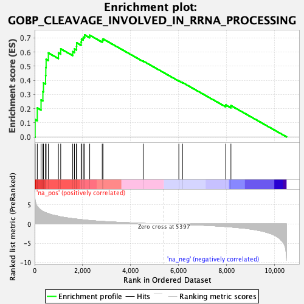
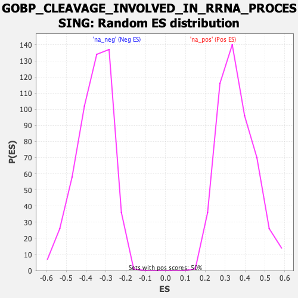

| Dataset | qlf.KOd4vsWTd4_gsea_score |
| Phenotype | NoPhenotypeAvailable |
| Upregulated in class | na_pos |
| GeneSet | GOBP_CLEAVAGE_INVOLVED_IN_RRNA_PROCESSING |
| Enrichment Score (ES) | 0.72080463 |
| Normalized Enrichment Score (NES) | 2.0199752 |
| Nominal p-value | 0.0 |
| FDR q-value | 4.5286756E-4 |
| FWER p-Value | 0.051 |

| SYMBOL | RANK IN GENE LIST | RANK METRIC SCORE | RUNNING ES | CORE ENRICHMENT | |
|---|---|---|---|---|---|
| 1 | NHP2 | 20 | 6.137 | 0.1221 | Yes |
| 2 | RCL1 | 110 | 4.509 | 0.2047 | Yes |
| 3 | NOB1 | 267 | 3.545 | 0.2614 | Yes |
| 4 | EXOSC7 | 344 | 3.257 | 0.3199 | Yes |
| 5 | EXOSC2 | 368 | 3.180 | 0.3820 | Yes |
| 6 | TBL3 | 457 | 2.929 | 0.4327 | Yes |
| 7 | TSR1 | 466 | 2.916 | 0.4909 | Yes |
| 8 | BOP1 | 478 | 2.892 | 0.5482 | Yes |
| 9 | UTP20 | 572 | 2.682 | 0.5935 | Yes |
| 10 | ERI3 | 992 | 2.003 | 0.5940 | Yes |
| 11 | RRS1 | 1087 | 1.849 | 0.6224 | Yes |
| 12 | NOP14 | 1588 | 1.381 | 0.6026 | Yes |
| 13 | EXOSC3 | 1661 | 1.327 | 0.6225 | Yes |
| 14 | ABT1 | 1748 | 1.266 | 0.6399 | Yes |
| 15 | EXOSC9 | 1753 | 1.263 | 0.6650 | Yes |
| 16 | NOL9 | 1939 | 1.122 | 0.6701 | Yes |
| 17 | RPP40 | 1952 | 1.113 | 0.6914 | Yes |
| 18 | NOP9 | 2029 | 1.056 | 0.7055 | Yes |
| 19 | EXOSC8 | 2085 | 1.018 | 0.7208 | Yes |
| 20 | EXOSC10 | 2297 | 0.896 | 0.7188 | No |
| 21 | BMS1 | 2820 | 0.663 | 0.6824 | No |
| 22 | RPS21 | 2853 | 0.648 | 0.6924 | No |
| 23 | RRP36 | 4527 | 0.162 | 0.5361 | No |
| 24 | UTP23 | 6015 | -0.099 | 0.3962 | No |
| 25 | ERI1 | 6169 | -0.128 | 0.3842 | No |
| 26 | KRI1 | 7971 | -0.682 | 0.2262 | No |
| 27 | ERI2 | 8188 | -0.781 | 0.2213 | No |
